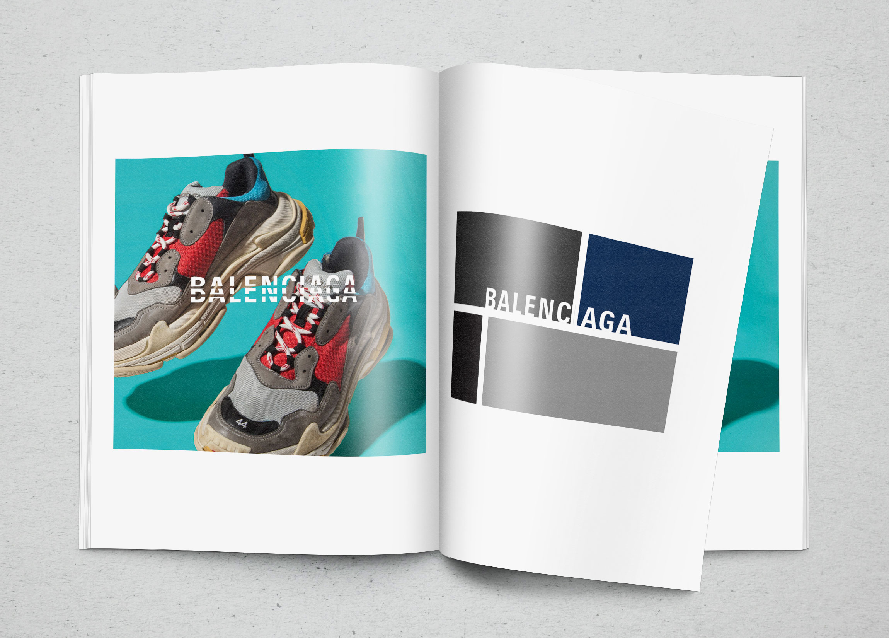
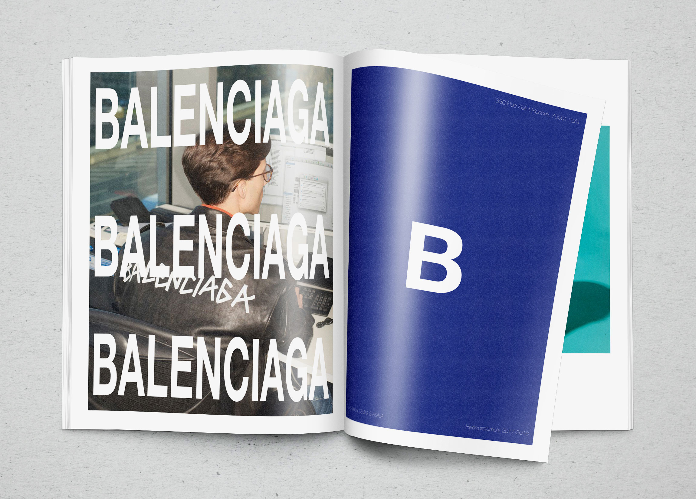

Balenciaga, Lookbook
Lookbook, Graphic Design
Balenciaga is well-sought brand based in Paris. From 2016 Fall/Winter collection with new creative director, Demna Gvasalia, the brand radically changed aesthetically. It aims different perspective of luxury by adopting factors that are not meant to be luxurious. Loving much of this subverted idea of luxury, I created this lookbook aligned with how the brand represents itself.


